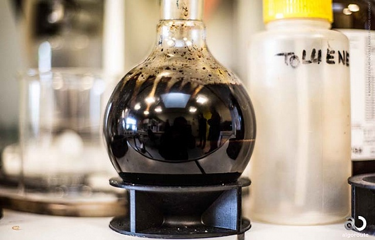
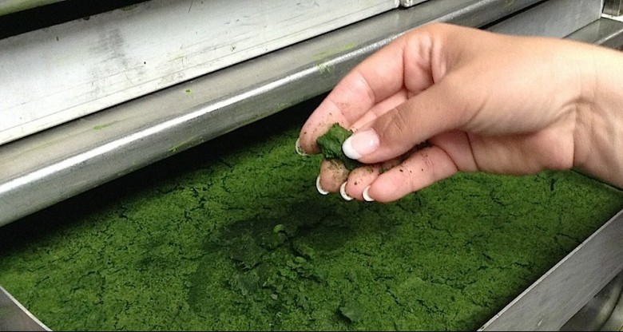
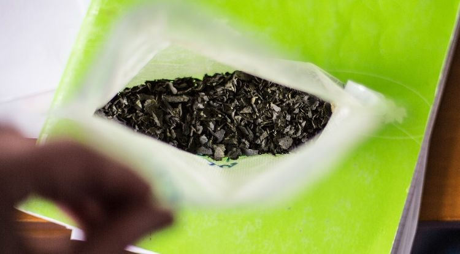

Французькі вчені отримали екологічно чистий біоасфальт з мікроводоростей
Мікроводорості вже давно використовують у косметичній сфері та харчових добавках. Однак, у вчених з'явилася ідея переробляти їх, приміром, у біопаливо, або використовувати в якості альтернативи продуктів на основі нафти. Нещодавно французьким вченим вдалося отримати з водоростей біоасфальт, що за своїми властивостями дуже близький до звичайного асфальту. Результати їх розробок були опубліковані в журналі «ACS Sustainable Chemistry & Engineering», повідомляє ресурс Gearmix.ru
Програма «Algoroute» дослідників з лабораторій Нанта та Орлеану (Франція) передбачала отримання біоасфальту із залишків водоростей (попередньо їх використовували для інших галузей промисловості).
Для цього вчені застосували процес гідротермального розрідження для перетворення залишків мікроводоростей у чорну, в'язку, гідрофобну субстанцію, що дуже нагадує традиційний асфальт на основі гудрону. На даний момент ефективність конверсії цього процесу становить 55%.
Хоча хімічна композиція біоасфальта повністю відрізняється від традиційного нафтового зразка, вони мають схожі характеристики (включаючи чорний колір і реологічні властивості). При температурах понад 100 градусів Цельсія біоасфальт являє собою рідину, яку можна використовувати для покриття мінеральних агрегатів; при температурах від -20 до +51 він стає в'язкопружним, що забезпечує склеювання гранулярних структур, одночасно допомагаючи їм витримувати механічні навантаження і зменшуючи напругу матеріалу.

|